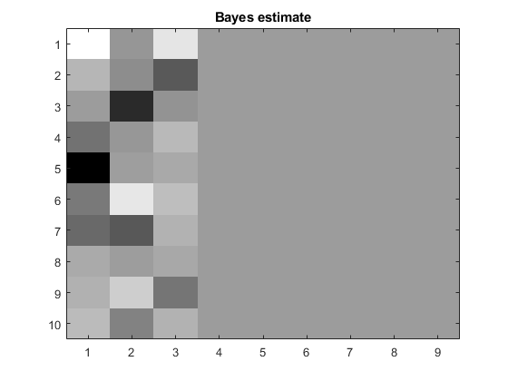
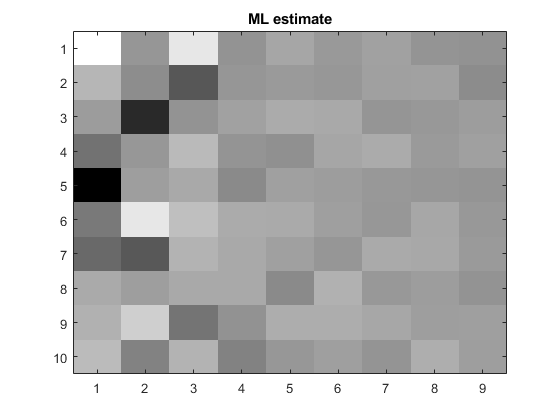
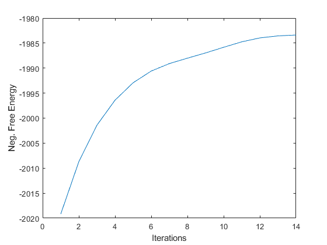
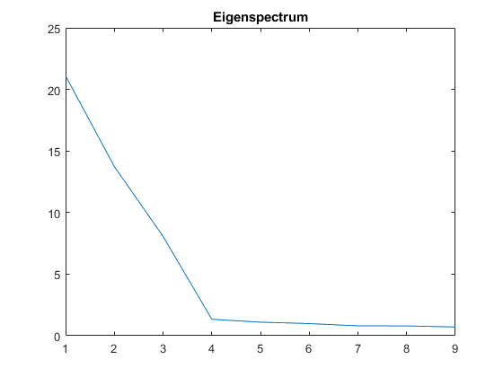
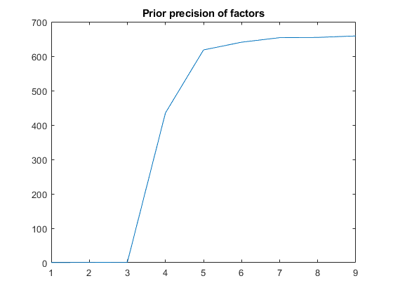
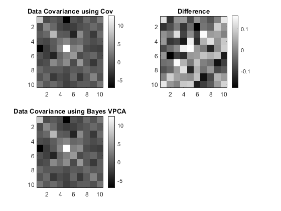

close all
clear all
N=100;
d=10;
q=3;
W=randn(d,q);
W=orth(W);
x=randn(q,N);
sd_x=diag([5,4,3,2,1,1,1,1,1]);
x=sd_x(1:q,1:q)*x;
e=randn(d,N);
mu=ones(d,1)*ones(1,N);
t=W*x+mu+e;
pca=spm_vpca(t);
figure; imagesc(pca.M_w); colormap gray; title('Bayes estimate');
figure; imagesc(pca.ml.W); colormap gray; title('ML estimate');
figure
plot(pca.Fm_evol);
xlabel('Iterations');
ylabel('Neg. Free Energy');
figure
plot(pca.ml.lambda);
title('Eigenspectrum');
figure
plot(pca.mean_alpha);
title('Prior precision of factors');
disp(' ');
disp('To recover eg 4 hidden sources')
disp('project data, t, onto first 4 columns of factor matrix:');
disp('W=pca.M_w(:,1:4);xhat=W''*t;');
W=pca.M_w(:,1:4);
xhat=W'*t;
disp(' ');
disp('A Bayesian estimate of the data covariance matrix');
disp('is given by:');
disp('obs_noise_var=(1/pca.mean_tau); CBayes=W*W''+obs_noise_var*eye(pca.d)');
obs_noise_var=(1/pca.mean_tau);
CBayes=W*W'+obs_noise_var*eye(pca.d);
C=cov(t');
figure
subplot(2,2,1);
imagesc(C);
colormap gray
colorbar
title('Data Covariance using Cov');
subplot(2,2,3);
imagesc(CBayes);
colormap gray
colorbar
title('Data Covariance using Bayes VPCA');
subplot(2,2,2);
imagesc(C-CBayes);
colormap gray
colorbar
title('Difference');
Iteration 1: F = -2038.4654
Iteration 2: F = -2019.1823, deltaF = 0.00946
Iteration 3: F = -2008.7104, deltaF = 0.00519
Iteration 4: F = -2001.4100, deltaF = 0.00363
Iteration 5: F = -1996.4060, deltaF = 0.00250
Iteration 6: F = -1992.9221, deltaF = 0.00175
Iteration 7: F = -1990.5846, deltaF = 0.00117
Iteration 8: F = -1989.0946, deltaF = 0.00075
Iteration 9: F = -1988.0108, deltaF = 0.00054
Iteration 10: F = -1986.9655, deltaF = 0.00053
Iteration 11: F = -1985.8331, deltaF = 0.00057
Iteration 12: F = -1984.7442, deltaF = 0.00055
Iteration 13: F = -1983.9614, deltaF = 0.00039
Iteration 14: F = -1983.5575, deltaF = 0.00020
Iteration 15: F = -1983.3830, deltaF = 0.00009
To recover eg 4 hidden sources
project data, t, onto first 4 columns of factor matrix:
W=pca.M_w(:,1:4);xhat=W'*t;
A Bayesian estimate of the data covariance matrix
is given by:
obs_noise_var=(1/pca.mean_tau); CBayes=W*W'+obs_noise_var*eye(pca.d)
     